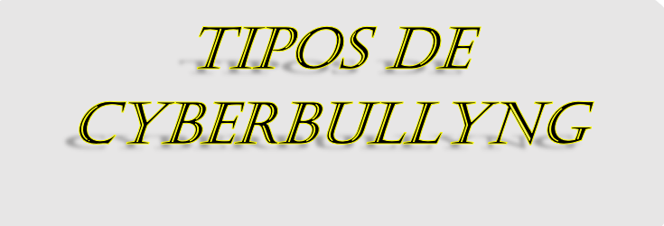
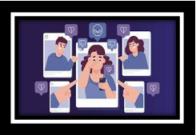
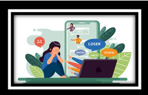
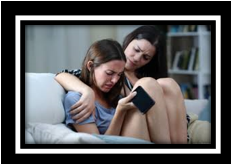
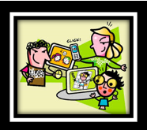
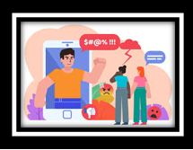
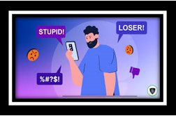

El ciberbullying es un tipo de acoso o intimidación padecido principalmente por menores de edad en los medios socio-digitales, a través de comentarios, mensajes o videos ofensivos e insultantes. Quienes lo sufren suelen manifestar ansiedad, baja autoestima, depresión, indefensión, mal humor, reacciones agresivas y hasta ideas suicidas.
Entre algunos de los síntomas físicos que presentan están: dolor de cabeza, dolor abdominal, mareos, cambios en el hábito intestinal, náuseas, insomnio de conciliación o despertares frecuentes.
Se llama así porque los agresores mantienen su anonimato, se esconden detrás de la pantalla del ordenador y deshumanizan a la víctima (se toman a broma sus agresiones, puesto que no ven la reacción que provoca en la otra persona).
Es cuando alguien accede a la cuenta de la red social de un menor para publicar contenido inapropiado, haciéndose pasar por él. Es una forma seria de ofender a alguien, la cual mucha gente percibe con humor o como una forma de entretenimiento, pero no lo es.
Este tipo de acoso consiste en enviar mensajes constantes a una persona para decirle que le gusta a alguien más o para controlar todos sus movimientos cuando ya ha iniciado una relación con su acosador.
El agresor obtiene fotos comprometedoras de la víctima o la chantajea para conseguirlas, con el fin de difundirlas por correo o subirlas a las redes sociales, muchas veces como una forma de venganza.
Sucede cuando el agresor se hace pasar por la víctima y manda mensajes de mal gusto a otras personas.
